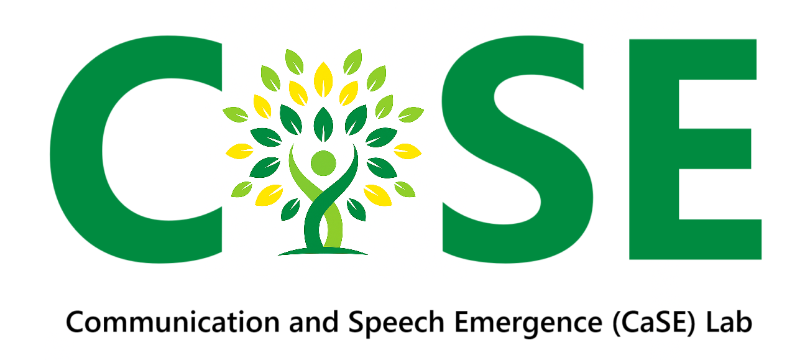
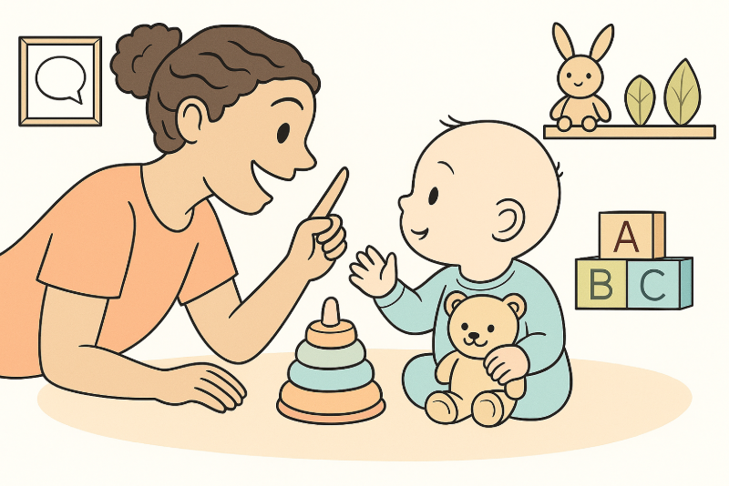

Welcome to the Communication and Speech Emergence Laboratory (CaSE Lab)! The CaSE Lab is led by Dr. Helen Long and based in the Communication and Sciences Program in the Department of Psychological Sciences at Case Western Reserve University (CWRU) in Cleveland, Ohio.
Learn more about the lab and meet more of the team!
Our Research
👶 Early Communication and Cerebral Palsy
We study how babies with or at high risk for cerebral palsy use sounds and babble in their first years of life. Our goal is to spot early signs of speech and communication challenges so children can get support from speech-language pathologists as early as possible.
We are currently recruiting SLPs and families in this research!
💡 Early Vocal Development in Neurodevelopmental Disabilities
Even before babies say real words, their sounds can tell us a lot. We work with families of infants with conditions like preterm birth, tuberous sclerosis complex, and autism to understand how early vocal differences may predict future communication needs.
🗣️ Evolutionary Origins of How We Learn to Talk
Babies don’t just make sounds to interact. They also practice and play when sounds when alone. Our work has found that these self-directed sounds are common and important. When babies are interacting with parents, they tend to use more advanced babbling sounds. Both types of vocal play help shape speech development.
🌍 Open Science Practices in Communication Sciences & Disorders (CSD)
We work with a group of scientists and clinicians in the discipline of CSD to explore how open science is used to enhance the accessibility, reproducibility, and transparency of research in the field of communication sciences and disorders. Our studies have revealed that most researchers want to use these practices, but need more support and resources to get started. Check out our resources through CSDisseminate and other resources here.
